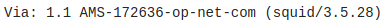
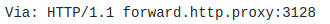
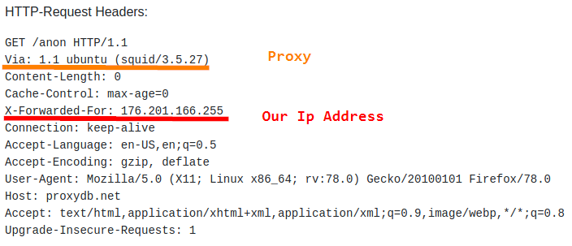

visit a site that we own and verify the visitor logs
Visit a site that we own and verify the visitor logs
Headers can reveal we are using a Proxy Server or not:
This only in theory because we have to remember the general rule: "Any information obtained from the client cannot be trusted!" and in this case the Headers can be easily modified by the Proxy Server.
A Webpage can understand if we are using a Proxy Server by using these
PHP server variables:
▪
$_SERVER['REMOTE_ADDR'] → Added by the Browser of the original Client that make the request
▪
$_SERVER['HTTP_CLIENT_IP'] → Added by the Proxy Server,
▪
$_SERVER['HTTP_VIA'] → Added by the Proxy Server, ask the IP of the Proxy Server
▪
$_SERVER['HTTP_X_FORWARDED_FOR'] → Added by the Proxy Server, ask the IP of the original real user
Classification of the Proxy Servers: ◇
Direct connection (no proxy used) ▪
$_SERVER['REMOTE_ADDR']: client real IP
▪
$_SERVER['HTTP_VIA']: None
▪
$_SERVER['HTTP_X_FORWARDED_FOR']: None
◇
High Anonymity Proxy (Elite Proxy) ▪
$_SERVER['REMOTE_ADDR']: Proxy server IP
▪
$_SERVER['HTTP_VIA']: None
▪
$_SERVER['HTTP_X_FORWARDED_FOR']: None
◇
Anonymous Proxy ▪
$_SERVER['REMOTE_ADDR']: Last proxy server IP
▪
$_SERVER['HTTP_VIA']: Proxy server IP
▪
$_SERVER['HTTP_X_FORWARDED_FOR']: Proxy server IP, followed by a comma to connect multiple proxy server IPs
◇
Transparent Proxy ▪
$_SERVER['REMOTE_ADDR']: Last proxy server IP
▪
$_SERVER['HTTP_VIA']: Proxy server IP
▪
$_SERVER['HTTP_X_FORWARDED_FOR']: The real IP of the client, followed by a comma to connect multiple proxy server IPs
The anonymity of a proxy server depends how it modify the headersThese HTTP headers are populated only if the Web Server request them with the PHP variables seen above
| HTTP-Header that can reveal your IP-address | HTTP-Header that can reveal that you are using a proxy |
|---|
| ACCPROXYWS | Mt-Proxy-ID |
| Cdn-Src-Ip | Proxy-agent |
| Client-IP | Proxy-Connection |
| client_ip | Surrogate-Capability |
| CUDA_CLIIP | Via |
| Forwarded | X-Accept-Encoding |
| Forwarded-For | X-ARR-LOG-ID |
| REMOTE-HOST | X-Authenticated-User |
| X-Client-Ip | X-BlueCoat-Via |
| X-Coming-From | X-Cache |
| X-Forwarded | X-CID-HASH |
| X-Forwarded-For | X-Content-Opt |
| X-Forwarded-For-IP | X-D-Forwarder |
| X-Forwarded-Host | X-Fikker |
| X-Forwarded-Server | X-Forwarded-Port |
| X-Host | X-Forwarded-Proto |
| X-Network-Info | X-IMForwards |
| X-Nokia-RemoteSocket | X-Loop-Control |
| X-ProxyUser-IP | X-MATO-PARAM |
| X-QIHOO-IP | X-NAI-ID |
| X-Real-IP | X-Nokia-Gateway-Id |
| XCnool_forwarded_for | X-Nokia-LocalSocket |
| XCnool_remote_addr | X-Original-URL |
| | X-Proxy-ID |
| | X-Roaming |
| | x-teamsite-preremap |
| | X-Tinyproxy |
| | X-TurboPage |
| | X-Varnish |
| | X-Via |
| | X-WAP-Profile |
| | X-WrProxy-ID |
| | X-XFF-0 |
| | Xroxy-Connection |
| | And all other headers that begin with X-* |
Examples(using http://proxydb.net/anon):• The header “Via” has revealed that we are using a Proxy in these scenarios:
 • The Headers “Via” and “X-Forwarded-For” have revealed both my address and that i am using a proxy
